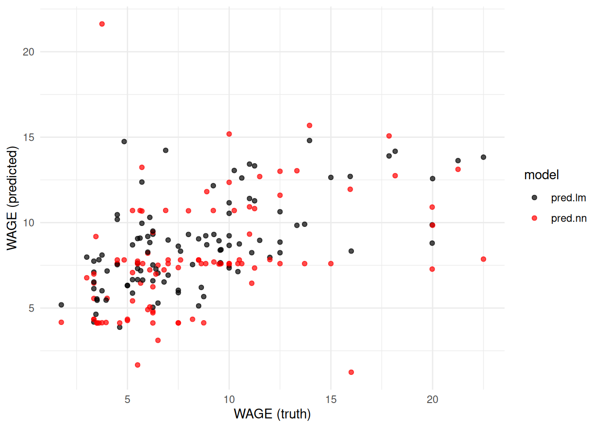

Chapter 5 Tidy modelling
The prediction chapter has shown us how to fit and assess the performance of the linear model, regression trees, random forests and neural networks.
In each case both the model fitting and obtaining predictions was consistent:
- We use a formula syntax to specify the model and provide the training data.
- We use the
predictcommand on the resulting model object, providing testing data.
This works well as long as all our models follow this same syntax. Unfortunately, many models require different syntaxes for one or both of these steps.
In addition, there are often other things that we may want to do, such as
processing the data beforehand (e.g. to scale predictors to a common scale or impute
missing values). Any data transformation we perform on the training set will
need to be replicated on the test set. Further, the tools we’ve used for
summarising model performance (computing MSE via dplyr::summarise()) are metric-specific,
and it would be nice to be able to easily switch to other metrics, or to compute
many metrics at once (e.g. the mean absolute error, or root mean squared error).
The tidymodels set of packages is designed for modelling in a consistent and tidy
fashion. The idea is that it abstracts the specific syntaxes for
fitting different models and provides a common interface that generally works across
a wide range of model types. It also has packages for data processing and model
evaluation, among other things.
We will begin with the core pieces of the framework and then extend them
to a more complete workflow using workflows, resampling, and simple
tuning.
The packages we’ll be focusing on in this chapter are:
rsamplefor resampling.recipesfor data processing.parsnipfor model fitting.workflowsfor bundling preprocessing and a model together.tunefor resampling-based evaluation and tuning.yardstickfor measuring model performance.
The tidymodels website has a number of excellent tutorials and an overview of some of the additional packages available (e.g. tune, workshop).
How this chapter connects. Sections 4.2 and 6.5.5 introduced the main supervised-learning methods. This chapter turns those ideas into a reusable workflow: split the data, preprocess them, fit a model, evaluate it honestly, then tune and finalise it. The preprocessing stage also connects back to Section 3.1, because missing-value handling belongs in the same pipeline rather than being treated as a mysterious side quest.
5.1 Splitting and resampling data
The rsample package is used for resample data sets. A dataset resample is where the dataset is split in two in some way. This may be via bootstrapping, sampling the same number of rows from a data set with replacement, or by randomly dividing the rows into two sets, creating training and validation or artificial test sets. In either case the rows of the data are in one of two sets: Either in the ‘analysis’ or ‘training’ set, or the ‘assessment’, ‘testing’ or ‘validation’ sets42.
This process may be repeated multiple times, producing multiple pairs of analysis and assessment sets. In the case of bootstrapping, the analysis sets could be used to compute a resampling distribution of some summary statistic such as the sample mean43. In the case of a data split, it might be for cross-validation. Collections of resamples like this can be managed using the rsample package.
The main functionality that we’ll be using is to split a data set into training set and validation sets using the initial_split() function, so that we can compare model performance to select the best model for the dataset at hand. We can then use that best model, retrained on all the data to build a final model for predicting the outcome on a separate testing dataset where the outcome is unknown.
Example 5.1 Splitting the US Wage data
We can split the US wage data into a new training and artificial test/validation set using the initial_split() function.
library(rsample)
set.seed(1945)
wage.orig <- read_csv("../data/wage-train.csv") |> rowid_to_column()
split <- initial_split(wage.orig, prop = 0.75)
split#> <Training/Testing/Total>
#> <300/100/400>wage.new.train <- training(split)
wage.validation <- testing(split)
wage.new.train |> slice_head(n=4)#> # A tibble: 4 × 12
#> rowid EDU SOUTH SEX EXP UNION WAGE AGE RACE OCCUP SECTOR MARRIED
#> <int> <dbl> <dbl> <chr> <dbl> <dbl> <dbl> <dbl> <chr> <chr> <chr> <chr>
#> 1 59 12 0 M 16 1 13.26 34 White Other Other Yes
#> 2 132 12 0 F 42 0 3.64 60 White Manageme… Other Yes
#> 3 333 13 1 M 17 0 8.06 36 White Professi… Other Yes
#> 4 262 8 0 F 29 0 3.4 43 Other Service Other Yes#> # A tibble: 4 × 12
#> rowid EDU SOUTH SEX EXP UNION WAGE AGE RACE OCCUP SECTOR MARRIED
#> <int> <dbl> <dbl> <chr> <dbl> <dbl> <dbl> <dbl> <chr> <chr> <chr> <chr>
#> 1 7 8 1 M 27 0 6.5 41 White Other Other Yes
#> 2 8 9 1 M 30 1 6.25 45 White Other Other No
#> 3 11 12 0 F 16 1 5.71 34 White Other Manufactu… Yes
#> 4 12 7 0 M 42 1 7 55 Other Other Manufactu… YesFor demonstration purposes, we add row identifiers to the original data set using
rowid_to_column().We supply the proportion that we wish to remain in the training/analysis portion of the data to
initial_split(). The default is 0.75 which is a good rule of thumb.The object returned by
initial_splitis of typersplit, holding details of the data split (the underlying dataset and the rows to be assigned to either set).The
training()andtesting()functions then extract the relevant dataset from the split.Looking at the first few rows of each shows how the rows have been randomly assigned to each data set.
5.2 Data processing with recipes
Often the data that we have to work with needs processing prior to applying models. This may be due to data quality issues (e.g. we may have to impute missing values or remove columns or rows that are very incomplete) or may be to ensure the data is in the form for a particular model (e.g. neural networks require numeric variables to be reasonably small and on similar scales to avoid computational issues, and other models require factor variables to be converted to numeric via indicator variables).
In the case of transforming variables via scaling, such as normalising a numeric measure to have mean zero and variance one, we need to ensure that the transformation is identical across the training and testing datasets. We can’t normalise variables across the two sets separately, as the datasets are likely to have at least slightly different means and variances.
The recipes package takes care of these details, providing a set of instructions (a recipe) for taking our raw data (ingredients) and preparing a data set ready for modelling.
If we need imputation, this is also where it should happen. For example, Section 3.1 discussed replacing missing values using summaries or nearby observations. In a modern modelling workflow, those choices should be encoded as recipe steps so that they are learned from the training data and then applied in exactly the same way to new data.
Example 5.2 A recipe for scaling the US Wage data
Suppose we wish to prepare the new training and validation sets from example 5.1 for use in a neural network model, so wish to normalise the numeric variables to the same scale (mean 0, variance 1)44. We do this by constructing a recipe for this data, specifying the formula and dataset we plan to use for modelling which defines outcome variable and predictors:
Our next step is to remove the rowid variable as not being useful for modelling and to normalise the numeric variables except those that are binary indicators (UNION and SOUTH):
wage.recipe.norm <- wage.recipe |>
step_rm(rowid) |>
step_normalize(all_numeric_predictors(), -UNION, -SOUTH)
wage.recipe.norm
#>
#> ── Recipe ──────────────────────────────────────────────────────────────────────
#>
#> ── Inputs
#> Number of variables by role
#> outcome: 1
#> predictor: 11
#>
#> ── Operations
#> • Variables removed: rowid
#> • Centering and scaling for: all_numeric_predictors(), -UNION, -SOUTHWe then prep (train) this recipe with the training set:
wage.recipe.trained <- wage.recipe.norm |> prep(wage.new.train)
wage.recipe.trained
#>
#> ── Recipe ──────────────────────────────────────────────────────────────────────
#>
#> ── Inputs
#> Number of variables by role
#> outcome: 1
#> predictor: 11
#>
#> ── Training information
#> Training data contained 300 data points and no incomplete rows.
#>
#> ── Operations
#> • Variables removed: rowid | Trained
#> • Centering and scaling for: EDU, EXP, AGE | TrainedFinally, we bake our recipe into the final datasets:
wage.train.baked <- wage.recipe.trained |> bake(wage.new.train)
wage.valid.baked <- wage.recipe.trained |> bake(wage.validation)This has resulted in datasets where our numeric variables have been centered and scaled to have mean zero and standard deviation one:
#> ── Data Summary ────────────────────────
#> Values
#> Name wage.train.baked
#> Number of rows 300
#> Number of columns 11
#> _______________________
#> Column type frequency:
#> factor 5
#> numeric 6
#> ________________________
#> Group variables None
#>
#> ── Variable type: factor ───────────────────────────────────────────────────────
#> skim_variable n_missing complete_rate ordered n_unique
#> 1 SEX 0 1 FALSE 2
#> 2 RACE 0 1 FALSE 3
#> 3 OCCUP 0 1 FALSE 6
#> 4 SECTOR 0 1 FALSE 3
#> 5 MARRIED 0 1 FALSE 2
#> top_counts
#> 1 M: 163, F: 137
#> 2 Whi: 244, Oth: 40, His: 16
#> 3 Oth: 79, Pro: 66, Cle: 59, Ser: 50
#> 4 Oth: 238, Man: 49, Con: 13
#> 5 Yes: 195, No: 105
#>
#> ── Variable type: numeric ──────────────────────────────────────────────────────
#> skim_variable n_missing complete_rate mean sd p0 p25
#> 1 EDU 0 1 9.0362e-17 1 -2.4861 -0.50040
#> 2 SOUTH 0 1 2.7333e- 1 0.44642 0 0
#> 3 EXP 0 1 1.4767e-16 1 -1.4393 -0.74953
#> 4 UNION 0 1 1.7667e- 1 0.38202 0 0
#> 5 AGE 0 1 2.0102e-16 1 -1.6121 -0.73595
#> 6 WAGE 0 1 9.0937e+ 0 5.1498 2.01 5.25
#> p50 p75 p100 hist
#> 1 -0.50040 1.0882 1.8825 ▁▁▇▂▅
#> 2 0 1 1 ▇▁▁▁▃
#> 3 -0.23222 0.62998 2.6992 ▇▇▃▂▂
#> 4 0 0 1 ▇▁▁▁▂
#> 5 -0.17433 0.63441 2.5215 ▆▇▅▂▂
#> 6 8 11.68 44.5 ▇▃▁▁▁Note that the baked validation set will not have mean zero and standard deviation one, as it was normalised using the same transformation as used for the training set (i.e. subtract the mean and divide by the standard deviation from the training set). Nonetheless they should be expected to be close to zero and one:
#> ── Data Summary ────────────────────────
#> Values
#> Name wage.valid.baked
#> Number of rows 100
#> Number of columns 11
#> _______________________
#> Column type frequency:
#> factor 5
#> numeric 6
#> ________________________
#> Group variables None
#>
#> ── Variable type: factor ───────────────────────────────────────────────────────
#> skim_variable n_missing complete_rate ordered n_unique
#> 1 SEX 0 1 FALSE 2
#> 2 RACE 0 1 FALSE 3
#> 3 OCCUP 0 1 FALSE 6
#> 4 SECTOR 0 1 FALSE 3
#> 5 MARRIED 0 1 FALSE 2
#> top_counts
#> 1 M: 52, F: 48
#> 2 Whi: 81, Oth: 14, His: 5
#> 3 Oth: 33, Cle: 17, Man: 15, Ser: 13
#> 4 Oth: 80, Man: 16, Con: 4
#> 5 Yes: 64, No: 36
#>
#> ── Variable type: numeric ──────────────────────────────────────────────────────
#> skim_variable n_missing complete_rate mean sd p0 p25
#> 1 EDU 0 1 -0.21446 0.93791 -2.8833 -0.50040
#> 2 SOUTH 0 1 0.37 0.48524 0 0
#> 3 EXP 0 1 0.11525 1.0890 -1.4393 -0.68487
#> 4 UNION 0 1 0.21 0.40936 0 0
#> 5 AGE 0 1 0.072786 1.0627 -1.6121 -0.71349
#> 6 WAGE 0 1 8.4391 4.4758 1.75 5.4375
#> p50 p75 p100 hist
#> 1 -0.50040 0.29389 1.8825 ▁▁▇▂▂
#> 2 0 1 1 ▇▁▁▁▅
#> 3 -0.14600 0.91019 2.4406 ▇▇▃▃▃
#> 4 0 0 1 ▇▁▁▁▂
#> 5 -0.084468 0.81413 2.5215 ▆▇▅▃▃
#> 6 7.25 10.448 22.5 ▇▇▃▁▁Typically the above process will be done without many of the intermediate objects45:
5.3 Modelling with parsnip
We have seen throughout the prediction chapter that each prediction model has its own functions available for fitting the model and predicting new observations given a model.
In the case of linear models via lm, regression trees via rpart, random forests via randomForestand neural networks via nnet both the construction of models and prediction from those models follow essentially identical syntaxes. We fit models using:
and do prediction via:
Unfortunately, this convenient formulation is not the norm. There are model types that are fit by providing a vector outcome and matrix of predictors (e.g. glmnet for penalised regression), and there are model types where predictions require additional processing to yield a vector of outcomes (e.g. ranger for random forests).
The parsnip package46 is designed to alleviate this by providing a consistent interface to a wide range of models for both prediction and classification. The idea is that we have essentially two main functions fit and predict that apply over different types of model fit using different modelling engines. For example, the linear regression model linear_reg can be fit using the lm engine we’re familiar with, or via penalised regression47 with glmnet or in a Bayesian framework48 with stan. Whichever model or engine we choose, the predict method will always return a data frame with one row for each row of the new data supplied to it which is convenient for binding as a new column.
Example 5.3 Fitting a linear regression and neural network to the US Wage data using parsnip
Below we utilise the baked training set from Example 5.2 to
fit a linear regression and neural network model with the parsnip package.
library(parsnip)
set.seed(1937)
wage.spec.lm <- linear_reg(mode = "regression",
engine = "lm")
wage.spec.nn <- mlp(mode = "regression",
engine="nnet",
hidden_units = 5,
penalty = 0.01,
epochs = 1000)
wage.fit.lm <- wage.spec.lm |> fit(WAGE ~ ., data=wage.train.baked)
wage.fit.nn <- wage.spec.nn |> fit(WAGE ~ ., data=wage.train.baked)
wage.fit.lm |> extract_fit_engine() |> summary()#>
#> Call:
#> stats::lm(formula = WAGE ~ ., data = data)
#>
#> Residuals:
#> Min 1Q Median 3Q Max
#> -10.633 -2.525 -0.484 1.756 33.448
#>
#> Coefficients:
#> Estimate Std. Error t value Pr(>|t|)
#> (Intercept) 8.89597 1.90234 4.676 4.53e-06 ***
#> EDU 1.93566 2.83666 0.682 0.4956
#> SOUTH -0.79529 0.58502 -1.359 0.1751
#> SEXM 1.09477 0.58390 1.875 0.0618 .
#> EXP 2.24480 12.95455 0.173 0.8626
#> UNION 1.66693 0.72430 2.301 0.0221 *
#> AGE -1.39124 12.41196 -0.112 0.9108
#> RACEOther -0.67047 1.31630 -0.509 0.6109
#> RACEWhite -0.03322 1.15322 -0.029 0.9770
#> OCCUPManagement 4.37077 1.06815 4.092 5.59e-05 ***
#> OCCUPOther 0.10389 0.98664 0.105 0.9162
#> OCCUPProfessional 1.59936 0.89974 1.778 0.0765 .
#> OCCUPSales -1.41473 1.23081 -1.149 0.2513
#> OCCUPService 0.02945 0.88981 0.033 0.9736
#> SECTORManufacturing -0.09914 1.41650 -0.070 0.9442
#> SECTOROther -1.58032 1.37506 -1.149 0.2514
#> MARRIEDYes 0.28569 0.58704 0.487 0.6269
#> ---
#> Signif. codes: 0 '***' 0.001 '**' 0.01 '*' 0.05 '.' 0.1 ' ' 1
#>
#> Residual standard error: 4.389 on 283 degrees of freedom
#> Multiple R-squared: 0.3125, Adjusted R-squared: 0.2736
#> F-statistic: 8.04 on 16 and 283 DF, p-value: 8.386e-16Some notes:
As we’ll be fitting a neural network, we set the random seed so we can reproduce these results.
The
linear_regcommand details that we’re performing regression using thelmengine. These are the defaults, so we could have just usedlinear_reg()here.The
mlpcommand is short for MultiLayer Perceptron model (a neural network). We’re configuring the model in regression mode (as neural nets can also do classification) using thennetengine which is the default. The additional parameterhidden_unitsdefines the number of nodes in the hidden layer (i.e. thesizeargument ofnnet) whilepenaltydefines the amount of weight decay (thedecayparameter ofnnet). Theepochsparameter is for the maximum number of training iterations (maxitinnnet). Theparsnippackage redefines its own names for these parameters and translates them for each of the possible engines that can be used (e.g. neural nets can also be fit using thekerasengine).Once we’ve defined the model specifications, we then fit each model via
fit(), supplying the model formula and training data.The objects returned from
fit()are of typemodel_fit, which is a wrapper around whichever object type was returned from the given engine. We can useextract_fit_engine()to pull out the actual model object (e.g. the result fromlmin the case of linear regression). This can be useful for interogating the model fit such as looking at coefficients or plotting a regression tree.
Once we have our model fits, we can perform prediction:
wage.pred <- wage.validation |>
bind_cols(
predict(wage.fit.lm, new_data = wage.valid.baked) |> rename(pred.lm = .pred),
predict(wage.fit.nn, new_data = wage.valid.baked) |> rename(pred.nn = .pred)
)
wage.pred |>
select(rowid, WAGE, pred.lm, pred.nn, everything()) |>
slice_head(n=4)#> # A tibble: 4 × 14
#> rowid WAGE pred.lm pred.nn EDU SOUTH SEX EXP UNION AGE RACE OCCUP
#> <int> <dbl> <dbl> <dbl> <dbl> <dbl> <chr> <dbl> <dbl> <dbl> <chr> <chr>
#> 1 7 6.5 5.2901 7.5072 8 1 M 27 0 41 White Other
#> 2 8 6.25 7.5207 4.8145 9 1 M 30 1 45 White Other
#> 3 11 5.71 9.9598 10.676 12 0 F 16 1 34 White Other
#> 4 12 7 8.9805 7.5999 7 0 M 42 1 55 Other Other
#> # ℹ 2 more variables: SECTOR <chr>, MARRIED <chr>#> # A tibble: 1 × 2
#> MSE.lm MSE.nn
#> <dbl> <dbl>
#> 1 12.831 19.256In the
predict()functions we’re providing the baked validation data so that we match the baked training data.We choose to bind the predictions to the original validation data, rather than the baked validation data. This can be useful for comparing predictions with predictors on the original scales.
The
predict()function returns a data frame with a column.predcontaining the predictions. As we have two models here and wish to have the predictions side by side, we’re renaming each of these to something we will remember.As we have a data.frame from the prediction, we can easily summarise these results to extract the MSE. In this case, the linear regression performs better than the neural network.
5.4 Model performance with yardstick
We have largely been using the mean square error for assessing model predictive performance. This is a useful measure in that it generally decomposes to be the sum of the variance and bias squared, so captures the variance-bias trade-off well. However, as it is a squared measure, it is not on the same scale as the outcome variable, which makes translating the MSE into it’s effect on individual predictions difficult.
An alternate measure would be the root mean squared error (RMSE), the square root of MSE. This is on the same scale as the data, so at least the magnitude can be used to assess predictive performance. If the MSE is 25, then this corresponds to an RMSE of 5, so we might expect predictions to generally be within about 10 units (twice the RMSE - in the same way a 95% confidence interval corresponds to roughly 2 standard errors) of their true value, assuming the errors are relatively symmetric.
But there are other measures available as well. The mean absolute error is given by \[\textsf{MAE} = \frac{1}{n} \sum_{i=1}^n |y_i - \hat{y}_i|,\] which is also on the same scale as the outcome variable. This measure is preferred in the case where there may be just a few observations that are predicted poorly. Such observations contribute greatly to the MSE or RMSE as the squaring of already large errors amplifies their effects. These observations will still contribute more than other observations to the MAE, but there is no squaring to further accentuate their effect.
The yardstick package provides a range of metrics for assessing model performance.
Example 5.4 Assessing model fits on the US Wage data with yardstick
Consider the models fit in Example 5.3. The metrics function from yardstick gives a set of standard metrics (RMSE, \(R^2\), MAE) for predictive performance on each model in turn.
#> # A tibble: 3 × 3
#> .metric .estimator .estimate
#> <chr> <chr> <dbl>
#> 1 rmse standard 3.5820
#> 2 rsq standard 0.35758
#> 3 mae standard 2.7634#> # A tibble: 3 × 3
#> .metric .estimator .estimate
#> <chr> <chr> <dbl>
#> 1 rmse standard 4.3882
#> 2 rsq standard 0.15622
#> 3 mae standard 3.0061Alternatively, we could pivot our two model predictions long so we can evaluate both models at once.
wage.long <- wage.pred |>
pivot_longer(starts_with("pred."), names_to="model", values_to="pred")
wage.long |>
group_by(model) |>
metrics(truth = WAGE, estimate = pred)#> # A tibble: 6 × 4
#> model .metric .estimator .estimate
#> <chr> <chr> <chr> <dbl>
#> 1 pred.lm rmse standard 3.5820
#> 2 pred.nn rmse standard 4.3882
#> 3 pred.lm rsq standard 0.35758
#> 4 pred.nn rsq standard 0.15622
#> 5 pred.lm mae standard 2.7634
#> 6 pred.nn mae standard 3.0061Some notes:
The two columns
pred.lmandpred.nncontain our predictions. We need the predictions in a single column if we wish to evaluate both at once. Thepivot_longer()specification creates amodelcolumn filled with “pred.lm” and “pred.nn”, and apredcolumn with the corresponding predictions.We
group_by(model)so that themetricsfunction is run on each model in turn.The result allows relatively easy comparison, though we could optionally add
if we wanted a three by two table.
In this example the linear model does better than the neural network across all metrics.
The other advantage to pivoting longer is we can more easily produce charts of the predictions, such as that given in Figure 5.1. It is clear from this chart that the neural network is performing considerably worse than the linear model.
ggplot(data = wage.long) +
geom_point(mapping = aes(x=WAGE, y=pred, col=model), alpha=0.7) +
scale_colour_manual(values = c(pred.lm = 'black', pred.nn='red')) +
labs(x = "WAGE (truth)", y = "WAGE (predicted)")
Figure 5.1: Comparison of predictions for the US Wage data from a linear model and neural network
5.5 Workflows
Once we have a recipe and a model specification, the next natural step
is to bundle them together. A workflow does exactly that. This helps
avoid the fiddly business of remembering which baked dataset matches
which model, and it keeps preprocessing and modelling tied together in a
single object.
Example 5.5 Bundling a recipe and model into a workflow
Below we combine the wage recipe with the linear model and neural network specifications from Example 5.3.
library(workflows)
wage.wf.lm <- workflow() |>
add_recipe(wage.recipe) |>
add_model(wage.spec.lm)
wage.wf.nn <- workflow() |>
add_recipe(wage.recipe) |>
add_model(wage.spec.nn)
wage.wf.nn.fit <- wage.wf.nn |> fit(data = wage.new.train)
predict(wage.wf.nn.fit, new_data = wage.validation) |>
slice_head(n = 4)#> # A tibble: 4 × 1
#> .pred
#> <dbl>
#> 1 5.9473
#> 2 10.382
#> 3 10.301
#> 4 9.1854Some notes:
The workflow is given the raw training data. It takes care of prepping and baking the recipe internally before fitting the model.
When we predict on
wage.validation, we again supply the raw data. The workflow applies the same preprocessing steps automatically.If we later decide to add imputation or dummy-variable creation, those changes belong in the recipe, not scattered through multiple separate code blocks.
5.6 Resampling with fit_resamples()
The validation split from Example 5.1 is useful, but it is still only one split. A model may look slightly better or worse just because of that one random partition. Resampling gives us a more stable picture by repeating the assessment over several training and validation folds.
Example 5.6 Comparing two workflows by cross-validation
We can compare the linear model and neural network workflows using 5-fold cross-validation on the training data.
library(tune)
set.seed(1945)
wage_folds <- vfold_cv(wage.new.train, v = 5)
wage.resamples.lm <- wage.wf.lm |>
fit_resamples(resamples = wage_folds,
metrics = metric_set(rmse, mae, rsq))
wage.resamples.nn <- wage.wf.nn |>
fit_resamples(resamples = wage_folds,
metrics = metric_set(rmse, mae, rsq))
bind_rows(
collect_metrics(wage.resamples.lm) |> mutate(model = "linear model"),
collect_metrics(wage.resamples.nn) |> mutate(model = "neural network")
) |>
select(model, .metric, mean, std_err)#> # A tibble: 6 × 4
#> model .metric mean std_err
#> <chr> <chr> <dbl> <dbl>
#> 1 linear model mae 3.0457 0.20526
#> 2 linear model rmse 4.3640 0.42507
#> 3 linear model rsq 0.29957 0.061394
#> 4 neural network mae 4.3880 0.43099
#> 5 neural network rmse 6.2532 0.93070
#> 6 neural network rsq 0.16021 0.042837Some notes:
vfold_cv()creates a collection of training/assessment splits fromwage.new.train. The original held-out setwage.validationremains untouched for later.fit_resamples()fits the workflow separately on each analysis fold and evaluates it on the corresponding assessment fold.The resulting summary is usually more trustworthy than judging two models from a single split alone.
5.7 Simple tuning with tune_grid()
Resampling is also the natural setting for tuning hyperparameters. To illustrate this, let us tune a random forest using the same wage data. This updates the random-forest story from Section 4.5 into a more modern workflow.
Example 5.7 Tuning a random forest with ranger
library(ranger)
wage.spec.rf <- rand_forest(mode = "regression",
trees = 500,
mtry = tune(),
min_n = tune()) |>
set_engine("ranger")
wage.wf.rf <- workflow() |>
add_recipe(wage.recipe) |>
add_model(wage.spec.rf)
wage.rf.grid <- crossing(
mtry = c(2L, 4L, 6L),
min_n = c(2L, 5L, 20L)
)
wage.rf.tune <- wage.wf.rf |>
tune_grid(resamples = wage_folds,
grid = wage.rf.grid,
metrics = metric_set(rmse, mae, rsq))
show_best(wage.rf.tune, metric = "rmse")#> # A tibble: 5 × 8
#> mtry min_n .metric .estimator mean n std_err .config
#> <int> <int> <chr> <chr> <dbl> <int> <dbl> <chr>
#> 1 2 20 rmse standard 4.5334 5 0.41464 pre0_mod3_post0
#> 2 2 2 rmse standard 4.5721 5 0.42773 pre0_mod1_post0
#> 3 2 5 rmse standard 4.5724 5 0.41870 pre0_mod2_post0
#> 4 4 20 rmse standard 4.6240 5 0.40413 pre0_mod6_post0
#> 5 4 5 rmse standard 4.7249 5 0.41311 pre0_mod5_post0Some notes:
The arguments
mtry = tune()andmin_n = tune()mark these quantities as hyperparameters to be chosen by resampling rather than fixed in advance.The grid here is deliberately small so that the example is easy to follow. In a real project we might search more values or use a more efficient tuning strategy.
show_best()gives the strongest settings under the chosen metric, here RMSE.
5.8 Final model fitting with last_fit()
Once tuning is complete, we choose the preferred hyperparameters, finalise the workflow, and then fit it one last time using the original training/test split from Example 5.1. This gives us an honest assessment on data that were not used during tuning.
Example 5.8 Finalising the tuned random forest
best_wage_rf <- select_best(wage.rf.tune, metric = "rmse")
wage.rf.final <- finalize_workflow(wage.wf.rf, best_wage_rf)
wage.rf.last <- wage.rf.final |>
last_fit(split = split, metrics = metric_set(rmse, mae, rsq))
collect_metrics(wage.rf.last)#> # A tibble: 3 × 4
#> .metric .estimator .estimate .config
#> <chr> <chr> <dbl> <chr>
#> 1 rmse standard 3.9007 pre0_mod0_post0
#> 2 mae standard 3.0174 pre0_mod0_post0
#> 3 rsq standard 0.24682 pre0_mod0_post0Some notes:
select_best()extracts the tuning settings that performed best on the resamples.finalize_workflow()plugs those settings into the workflow.last_fit()refits the final workflow on the full training portion ofsplitand evaluates it once on the held-out test portion.This is the supervised-learning pipeline in compact form: import and clean the data, define the recipe, resample, tune, and only then look at the final test-set performance.
5.9 Summary
The tidymodels framework provides a tidy and reproducible supervised
modelling pipeline.
rsamplehandles splitting and resampling, so that model assessment is not based on a lucky or unlucky single split.recipesencodes preprocessing such as scaling, dummy-variable creation, and imputation in a form that can be reused consistently.parsnipprovides a common interface to many model families, whileworkflowskeeps the recipe and model together so they do not drift apart.fit_resamples(),tune_grid(), andlast_fit()turn model comparison, tuning, and final evaluation into a coherent pipeline.
Looking ahead, the same workflow ideas support the classification methods in Section 6.5.5 and the ensemble methods in Section 9.
In the case of a bootstrap resample, rows may appear multiple times in the analysis set, as they are sampled with replacement. The rows in the assessment set are rows that don’t appear in the analysis set.↩︎
The great thing about the bootstrap, is that it can be applied to just about any summary statistic. e.g. you could fit a complicated model to each analysis set and extract the resampling distribution of any parameter from the model.↩︎
The numeric variables in the US wage are not on vastly different scales, so this may be less important for this example than for other datasets.↩︎
Often, rather than creating the final baked datasets, the baking is done directly in the modelling stage by supplying
bake(recipe, data)directly to the modelling or predict functions.↩︎The name
parsnipis a play on words. It is a reference to the oldercaretpackage (short for classification and regression training) which has a similar goal, but is implemented very differently from a technical perspective.↩︎In a penalised regression the coefficients \(\beta_k\) are found by minimising \[RSS + \lambda \sum_{k=1}^p \beta_k^2.\] Setting \(\lambda=0\) results in the conventional estimates of \(\beta_k\) that
lmwould provide, while increasing \(\lambda > 0\) results in optimal \(\beta_k\)’s that are closer to 0. This is particularly useful in the case where we have more predictors than we do observations, where the classical estimator would be underspecified. The penalisation parameter \(\lambda\) is often found by cross-validation.↩︎In a Bayesian framework we provide probability distributions that capture our prior beliefs about which values are plausible for the parameters of the model. The data (likelihood) is then used to update these beliefs to reflect the information provided by the data.↩︎